A/B 실제 영상 재평가
2026-11-02 · A pages-15 / B page-restoration-19. 기존 실험은 보존했습니다. C는 시작하지 않았습니다.
일반 실행과 가림 구간 능력 시험은 별개입니다. 일반 실행 28장은 모두 원본 유지입니다. B 가림 시험의 참고 이미지는 공식 GT가 아닙니다. 합성 경계·미관측 영역·분할 실패가 남아 있습니다.
Lecture 06 part 1 · 추가 training 영상
누적 판서 7개 · GT 4개 · B 원본 유지 7개.
| 출력 | Recall | Precision | F1 |
|---|
| GT | 99.97% | 95.79% | 97.84% |
| nearest | 99.98% | 95.20% | 97.53% |
| A | 99.98% | 95.23% | 97.54% |
| B | 99.98% | 95.23% | 97.54% |
GT·가장 가까운 관측·이전 A·새 A/B 전체 비교 · 판서·후보·복원 이유 JSON
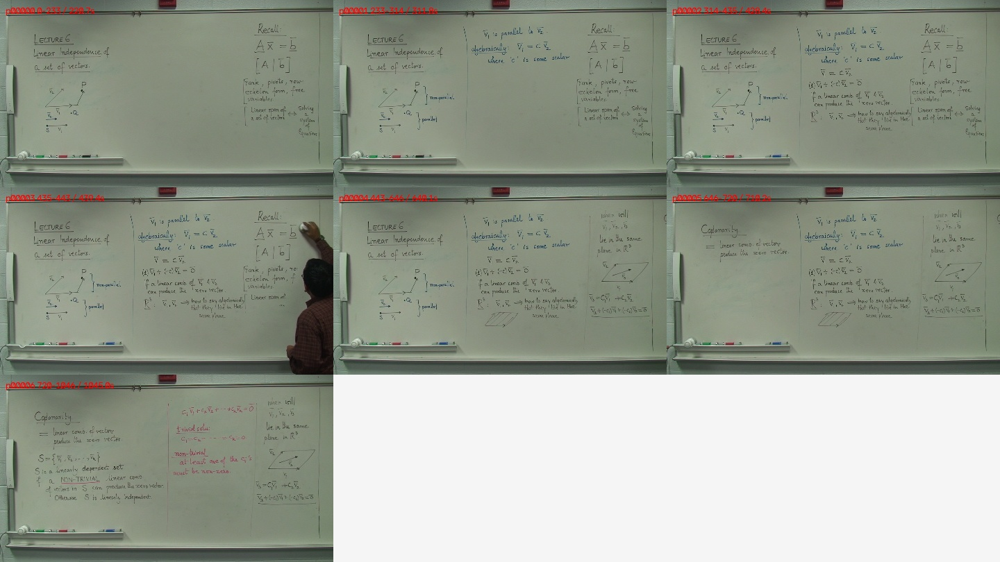
435–443초에 삭제 중간 상태가 별도 판서로 남습니다. 최초 pages-14는 06 GT 열람 전에 고정했습니다. 현재 pages-15는 01의 후보 동률 보완 뒤 재실행한 결과이고, 06은 소스와 GT를 이미 본 추가 진단입니다. 따라서 최종 A/B의 엄격한 미사용 testing 검증으로 주장하지 않습니다. 영상 1440×1080(SAR 4:3)은 평가에서 기존 함수대로 GT 크기에 맞춰 비교하며, 반해상도 정합 오차는 JSON에 기록했습니다.
실제 연속 가림 구간 · intervals01-verified
정상 A와 별개인 능력 시험입니다. 모든 0.5초 관측에 가림이 있는 연속 구간에서 A/말기 근거/B를 구간 내부 관측만으로 만들었습니다. 밖의 깨끗한 원본은 완료 후 평가에만 사용했습니다. 공식 GT 점수와 합산하지 않습니다.
725.225–729.228초 · partial · observed_hidden_writing_recovered
| 출력 | Recall | Precision | F1 |
|---|
| A | 98.08% | 44.26% | 61.00% |
| B | 99.58% | 45.56% | 62.51% |
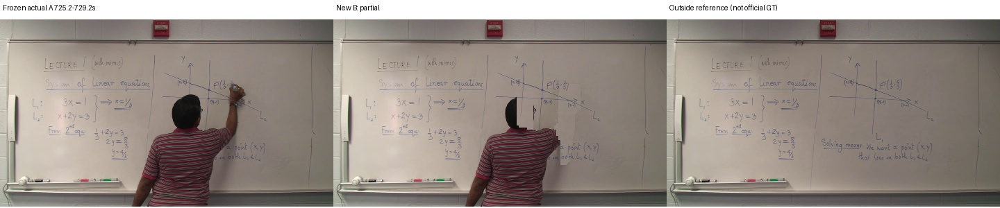
추가 노출 추정 649 분석 픽셀. 이 수치는 읽을 수 있는 글자 수가 아닙니다.
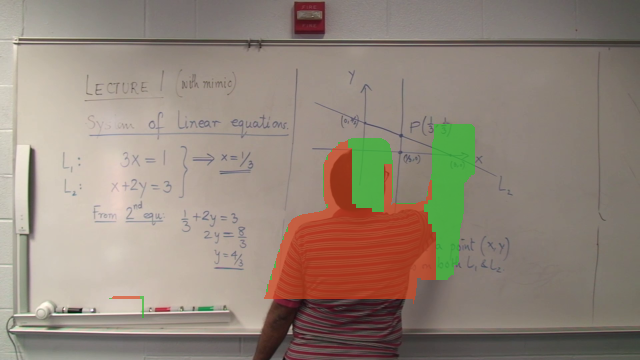
영역별 원본·대조 관측·밝기 보정 출처
1035.034–1045.043초 · partial · observed_hidden_writing_recovered
| 출력 | Recall | Precision | F1 |
|---|
| A | 95.96% | 32.32% | 48.35% |
| B | 100.00% | 64.65% | 78.53% |
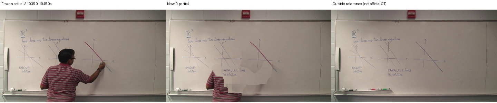
추가 노출 추정 1504 분석 픽셀. 이 수치는 읽을 수 있는 글자 수가 아닙니다.
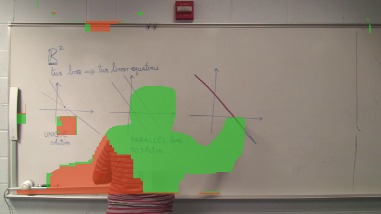
영역별 원본·대조 관측·밝기 보정 출처
591.091–598.097초 · partial · observed_hidden_writing_recovered
| 출력 | Recall | Precision | F1 |
|---|
| A | 97.12% | 44.15% | 60.71% |
| B | 100.00% | 75.21% | 85.85% |
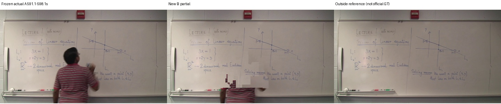
추가 노출 추정 1147 분석 픽셀. 이 수치는 읽을 수 있는 글자 수가 아닙니다.
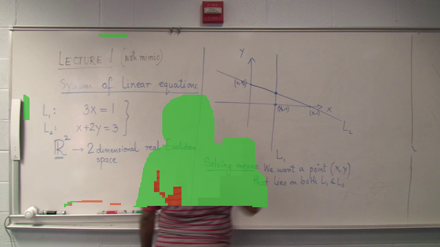
영역별 원본·대조 관측·밝기 보정 출처
330.830–340.840초 · partial · observed_hidden_writing_recovered
| 출력 | Recall | Precision | F1 |
|---|
| A | 98.82% | 71.19% | 82.76% |
| B | 100.00% | 99.94% | 99.97% |

추가 노출 추정 302 분석 픽셀. 이 수치는 읽을 수 있는 글자 수가 아닙니다.
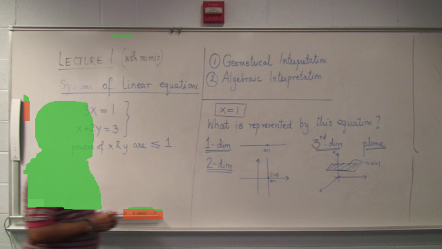
영역별 원본·대조 관측·밝기 보정 출처
실제 연속 가림 구간 · intervals02-verified
정상 A와 별개인 능력 시험입니다. 모든 0.5초 관측에 가림이 있는 연속 구간에서 A/말기 근거/B를 구간 내부 관측만으로 만들었습니다. 밖의 깨끗한 원본은 완료 후 평가에만 사용했습니다. 공식 GT 점수와 합산하지 않습니다.
1880.879–1885.883초 · partial · observed_hidden_writing_recovered
| 출력 | Recall | Precision | F1 |
|---|
| A | 94.98% | 56.77% | 71.06% |
| B | 99.91% | 87.05% | 93.04% |
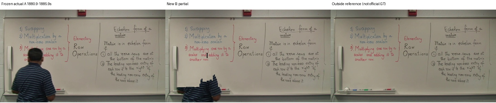
추가 노출 추정 2094 분석 픽셀. 이 수치는 읽을 수 있는 글자 수가 아닙니다.
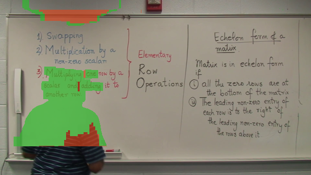
영역별 원본·대조 관측·밝기 보정 출처
1885.884–1891.889초 · composited · observed_hidden_writing_recovered
| 출력 | Recall | Precision | F1 |
|---|
| A | 97.02% | 50.79% | 66.67% |
| B | 98.69% | 89.92% | 94.10% |
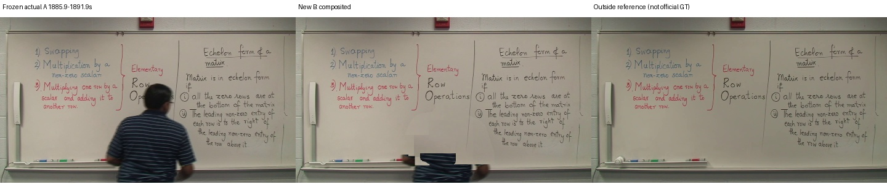
추가 노출 추정 911 분석 픽셀. 이 수치는 읽을 수 있는 글자 수가 아닙니다.
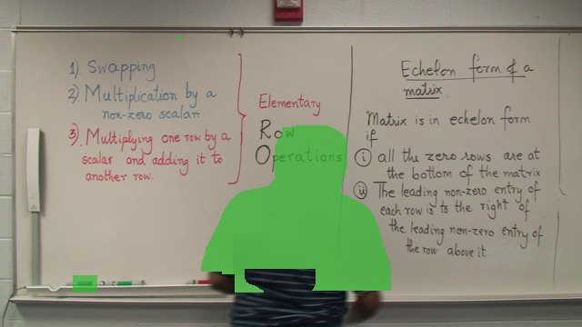
영역별 원본·대조 관측·밝기 보정 출처
2158.156–2162.160초 · original · hidden_writing_not_preserved
| 출력 | Recall | Precision | F1 |
|---|
| A | 95.76% | 50.81% | 66.39% |
| B | 95.76% | 50.81% | 66.39% |
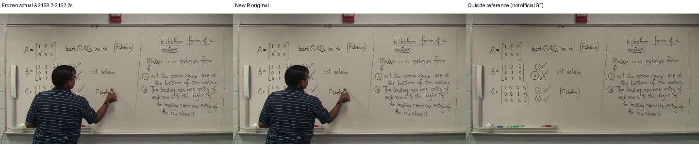
추가 노출 추정 0 분석 픽셀. 이 수치는 읽을 수 있는 글자 수가 아닙니다.
433.933–437.937초 · composited · observed_hidden_writing_recovered
| 출력 | Recall | Precision | F1 |
|---|
| A | 95.97% | 34.64% | 50.91% |
| B | 99.79% | 74.72% | 85.46% |
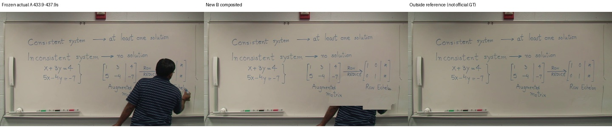
추가 노출 추정 1229 분석 픽셀. 이 수치는 읽을 수 있는 글자 수가 아닙니다.
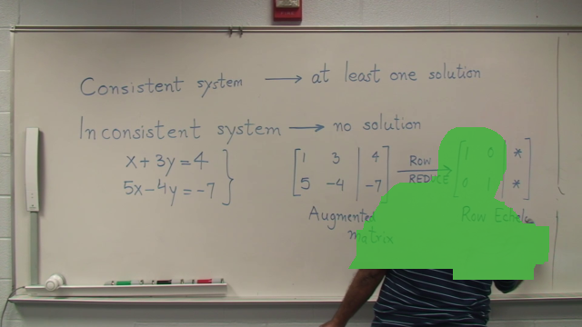
영역별 원본·대조 관측·밝기 보정 출처
실제 가림 시험 집계 · 공식 GT 아님
| 출력 | Recall | Precision | F1 |
|---|
| A | 96.72% | 48.12% | 63.48% |
| B | 99.22% | 73.48% | 83.23% |
8건 중 7건 합성/부분 복원, 1건 원본 유지. 구간 선택은 복원 전에 고정했으며 판서 주제·가림 종류 전체를 대표하는 무작위 시험은 아닙니다. 몸통 일부와 패치 경계가 남아 점수 상승만으로 완성품이라고 판단하지 않습니다.
채택 7건 출처의 픽셀 단위 재생 검증 · 두 구간의 원본 모든 프레임 180+120장 가림 검사
밀집 검사에서도 최소 가림은 각각 확인 필기 397/16970, 532/9276 픽셀이었습니다. 휴리스틱 가림 추정의 검사이며 모든 강의에 깨끗한 전체 장면이 없다는 증명은 아닙니다.
실제로 악화된 개발 후보 · 채택 금지 회귀 사례
| 출력 | Recall | Precision | F1 |
|---|
| A | 98.22% | 98.66% | 98.44% |
| B | 90.79% | 96.13% | 93.39% |
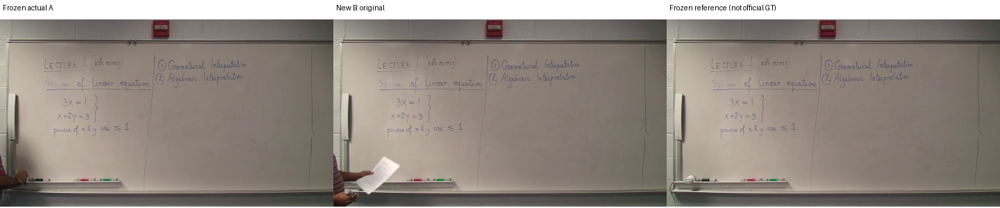
개발 중 B의 원본 교체가 A에만 보이던 필기를 잃어 F1 98.44→93.39%로 악화됐습니다. 이는 현재 채택 결과가 아닙니다. 현재는 기존 A 가시 필기 소실이 5픽셀을 넘는 원본 교체를 금지합니다. 실제 잔상/패치 경계 실패는 위 591초 부분 복원과 2158초 원본 유지에서도 확인할 수 있습니다.
통제된 합성 영상 시험
| 출력 | Recall | Precision | F1 |
|---|
| A | 86.41% | 90.94% | 88.62% |
| B | 100.00% | 99.75% | 99.88% |
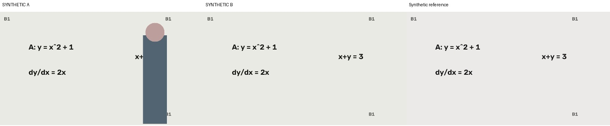
실제 영상 성능과 구분합니다. 원본에 없는 필기를 생성하지 않습니다.